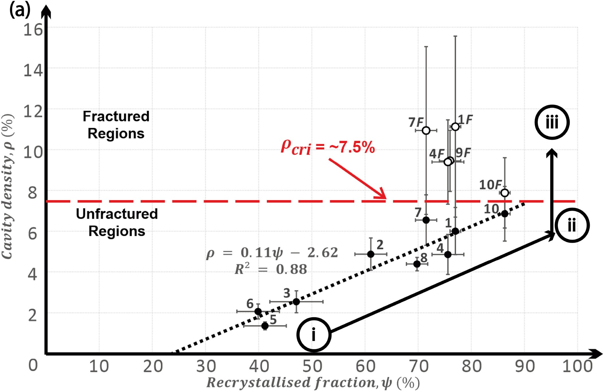
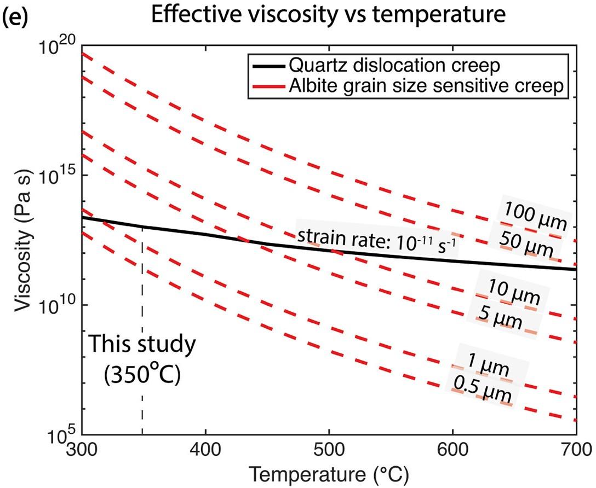
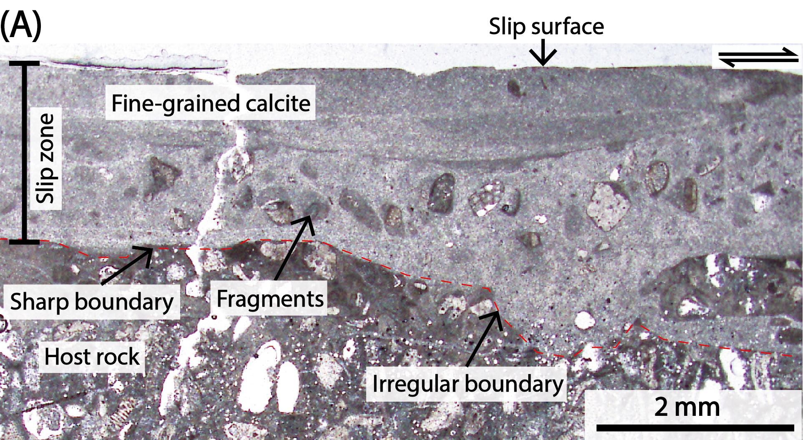
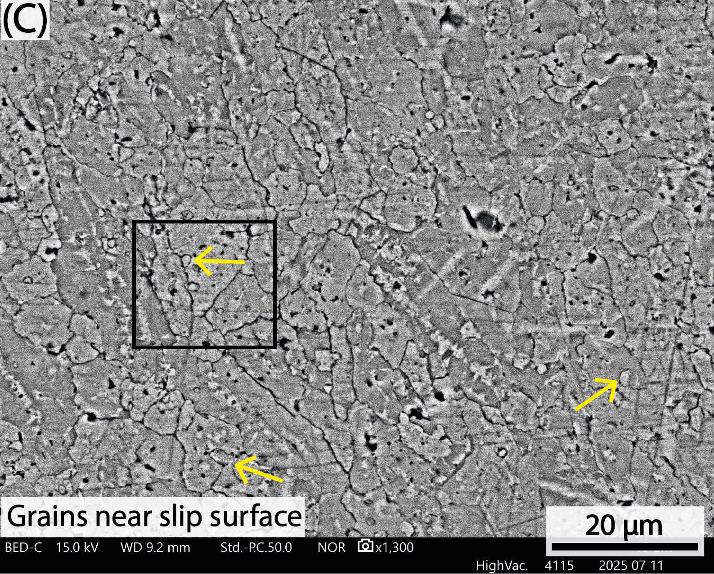
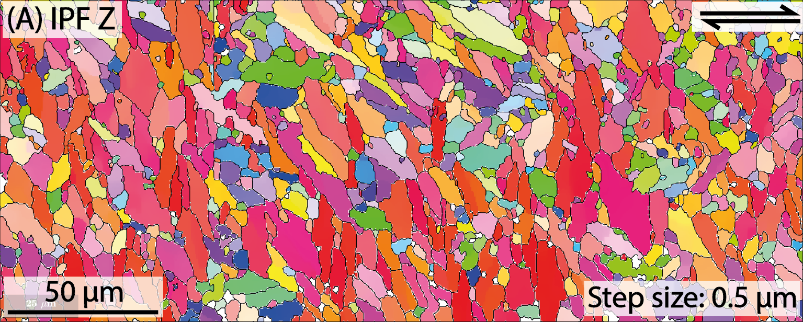

Research Theme
Using field, analytical and data-driven techniques, I investigate how structures and deformation mechanisms recorded in rocks link grain-scale processes to the development of fault-zone architecture and tectonic-scale structures.






Fault-Zone Rheology and Slow-to-Fast Earthquake Processes
Fault-zone rheology controls how rocks accommodate deformation and whether faults creep slowly or rupture in earthquakes. My research examines these processes across different crustal depths and tectonic settings, linking grain-scale deformation mechanisms to strain localisation, fault weakening, and their relationships with slow and fast earthquakes.
Near the base of the seismogenic zone, I investigated how rocks undergoing ductile deformation can develop fractures. Using samples from Japan’s Median Tectonic Line, I demonstrated that deformation-induced nanoscale cavities progressively accumulate and coalesce to form ductile fractures. This process may contribute to fault weakening and the initiation of rupture.
At shallow depths, I identified coseismic dislocation creep and dynamic recrystallisation in a carbonate-hosted active fault, demonstrating that crystal-plastic deformation can develop during rapid slip under near-surface conditions.
These studies reveal how evolving rock rheology influences fault behaviour across the earthquake cycle and how preserved microstructures can provide an “earthquake fossil” of past seismic events in fault rocks. Read the 2025 study, its Eos Editor's Highlight, and the 2026 study.
Multiscale Quantitative Structural Analysis and Data-Driven Methods
In a first-author study published in the Journal of Structural Geology (2023), I developed a data-driven method combining EBSD analysis with a Gaussian mixture model to distinguish recrystallised quartz grains from older relict grains without relying on subjective thresholds. Applied to rocks from the Median Tectonic Line in Japan, the method helps quantify strain localisation and stress in ductile shear zones. Read the 2023 study.
Latuner et al. (2026) later evaluated and extended this approach using experimentally deformed stainless steel. Their results demonstrate the wider potential of adaptive statistical methods for identifying recrystallised grains and connecting microstructural observations with material deformation in both structural geology and materials science.